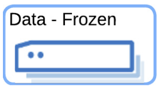
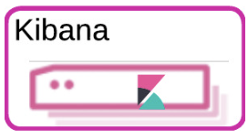

Time Series HA Architecture: Elastic Cloud - Hot-Frozen, Multi-Availability Zone Architecture
editTime Series HA Architecture: Elastic Cloud - Hot-Frozen, Multi-Availability Zone Architecture
editThe Hot-Frozen Elasticsearch cluster architecture is cost optimized for large time-series datasets while keeping all of the data fully searchable. There is no need to "re-hydrate" archived data. In this architecture, the hot tier is primarily used for indexing and immediate searching (1-3 days) with a majority of the search being handled by the frozen tier. Since the data is moved to searchable snapshots in an object store, the cost of keeping all of the data searchable is dramatically reduced.
This architecture is ideal for observability use cases. The architecture includes all the necessary components of the Elastic Stack and is not intended for sizing workloads, but rather as a basis to ensure the architecture you deploy is foundationally ready to handle any desired workload with resiliency. This architecture shows a very high level representation of data flow. For more details on that, see this <LINK>.
Use Case
editThis architecture is intended for organizations that need to:
- Monitor the performance and health of their applications in real-time, including the creation and tracking of SLOs (Service Level Objectives).
- Provide insights and alerts to ensure optimal performance and quick issue resolution for applications.
- Apply Machine Learning and Artificial Intelligence to assist SREs and Application Teams in dealing with the large amount of data in this type of use case.
- Generative ai? OTEL collector? Highlight the stuff that sells…
Architecture
edit
The diagram illustrates an Elasticsearch cluster deployed in Elastic Cloud across 2 availability zones (AZ) or optionally across a third availability zone (grayed out in the diagram).
Even if the cluster is deployed across only two AZ, a third master node is still required for quorum voting and will be created automatically in the third AZ.
The number of data nodes shown for each tier (hot and frozen) is illustrative and would be scaled up depending on ingest volume and retention period (see the example below). Hot nodes contain both primary and replica shards with anti-affinity guaranteed. This means that primary and replica shards are always guaranteed to be in different availability zones. Frozen nodes rely a large high-speed cache and retrieve data from the Snapshot Store as needed.
Machine learning nodes are optional but highly recommended for large scale time series use cases since the amount of data quickly becomes too difficult to analyze without applying techniques such as machine learning based anomaly detection.
The following table shows the recommended Elastic Cloud instance types and underlying hardware type for each cloud provider for the hot-frozen deployment illustrated in the diagram above.
Recommended Hardware Specifications
editElastic Cloud allows you to deploy clusters in AWS, Azure and Google Cloud. Available hardware types and configurations vary across all three cloud providers but each provides instance types that meet our recommendations for the node types used in this architecture:
- Data - Hot: since the hot tier is responsible for ingest, search and force-merge (when creating the searchable snapshots to roll data over to the frozen tier), cpu-optimized nodes with solid state drives are strongly recommended. Hot nodes should have a disk:memory ratio no higher than 45:1 and the vCPU:RAM ratio should be a minimum of 0.500.
- Data - Frozen: the frozen tier uses a local cache to hold data from the Snapshot Store in the cloud providers' object store. For the best query performance in the frozen tier, frozen nodes should use solid state drives with a disk:memory ratio of at least 75:1 and a vCPU:RAM ratio of at least 0.133.
- Machine Learning: Storage is not a key factor for ML nodes, however CPU and memory are important considerations. Each of our recommended instance types for machine learning have a vCPU:RAM ratio of at least 0.250.
- Master: Storage is not a key factor for master nodes, however CPU and memory are important considerations. Each of our recommended instance types for master nodes have a vCPU:RAM ratio of at least 0.500.
- Kibana: Storage is not a key factor for kibana nodes, however CPU and memory are important considerations. Each of our recommended instance types for kibana nodes have a vCPU:RAM ratio of at least 0.500.
The following table shows our specific recommendations for nodes in this architecture.
Type |
AWS Instance/Type |
Azure Instance/Type |
GCP Instance/Type |
aws.es.datahot.c6gd c6gd |
azure.es.datahot.fsv2 f32sv2 |
gcp.es.datahot.n2.68x32x45 N2 |
|
 |
aws.es.datafrozen.i3en i3en |
azure.es.datafrozen.edsv4 e8dsv4 |
gcp.es.datafrozen.n2.68x10x95 N2 |
aws.es.ml.m6gd m6gd |
azure.es.ml.fsv2 f32sv2 |
gcp.es.ml.n2.68x32x45 N2 |
|
aws.es.master.c6gd c6gd |
azure.es.master.fsv2 f32sv2 |
gcp.es.master.n2.68x32x45 N2 |
|
 |
aws.kibana.c6gd c6gd |
azure.kibana.fsv2 f32sv2 |
gcp.kibana.n2.68x32x45 N2 |
Sample Configuration
editBased on these hardware recommendations, here is a sample configuration for an ingest rate of 1TB/day with an ILM policy of 1 day in the hot tier and 89 days in the frozen tier for a total of 90 days of searchable data.
AWS Configuration
edit- Hot tier: 120G RAM (1 60G RAM node x 2 availability zones)
- Frozen tier: 120G RAM (1 60G RAM node x 2 availability zones)
- Machine learning: 128G RAM (1 64G node x 2 availability zones)
- Master nodes: 24G RAM (8G node x 3 availability zones)
- Kibana: 16G RAM (16G node x 1 availability zone)
Azure Configuration
edit- Hot tier: 120G RAM (1 60G RAM node x 2 availability zones)
- Frozen tier: 120G RAM (1 60G RAM node x 2 availability zones)
- Machine learning: 128G RAM (1 64G node x 2 availability zones)
- Master nodes: 24G RAM (8G node x 3 availability zones)
- Kibana: 16G RAM (16G node x 1 availability zone)
GCP Configuration
edit- Hot tier: 128G RAM (1 64G RAM node x 2 availability zones)
- Frozen tier: 128G RAM (1 64G RAM node x 2 availability zones)
- Machine learning: 128G RAM (1 64G node x 2 availability zones)
- Master nodes: 24G RAM (8G node x 3 availability zones)
- Kibana: 16G RAM (16G node x 1 availability zone)
Important Considerations
editThe following list are important conderations for this architecture:
-
Time Series Data Updates:
- Typically, time series use cases are append only and there is rarely a need to update documents once they have been ingested into Elasticsearch. The frozen tier is read-only so once data rolls over to the frozen tier documents can no longer be updated. If there is a need to update documents for some part of the data lifecycle, that will require either a larger hot tier or the introduction of a warm tier to cover the time period needed for document updates.
- Multi-AZ Frozen Tier:
- When using the frozen tier for storing data for regulatory purposes (e.g. one or more years), we typically recommend a single availability zone. However, since this architecture relies on the frozen tier for most of the search capabilities, we recommend at least two availability zones to ensure that there will be data nodes available in the event of an AZ failure.
-
Shard Management:
-
The most important foundational step to maintaining performance as you scale is proper shard sizing, location, count, and shard distribution. For a complete understanding of what shards are and how they should be used please review this documentation page.
- Sizing: Maintain shard sizes within recommended ranges and aim for an optimal number of shards.
-
Distribution: In a distributed system, any distributed process is only as fast as the slowest node. As a result, it is optimal to maintain indexes with a primary shard count that is a multiple of the node count in a given tier. This creates even distribution of processing and prevents hotspots.
- Shard distribution should be enforced using the ‘total shards per node’ index level setting
-
For consistent index level settings is it easiest to use index lifecycle management with index templates, please see the section below for more detail.
-
Architecture Variant - adding a Cold Tier
- The hot-frozen architecture works well for most time-series use cases. However, when there is a need for more frequent, low-latency searches, introducing a cold tier may be required. Some common examples include detection rule lookback for security use cases or complex custom dashboards. The ILM policy for the example Hot-Frozen architecture above could be modified from 1 day in hot, 89 in frozen to 1 day in hot, 7 days in cold, and 82 days in frozen. Cold nodes fully mount a searchable snapshot for primary shards; replica shards are not needed for reliability. In the event of a failure, cold tier nodes can recover data from the underlying snapshot instead. See Data tiers for more details on Elasticsearch data tiers. Note: our Data tiers docs may be slightly at odds with the concept of hot/frozen or hot/cold/frozen. Should they be updated?
-
Limitations of this architecture.
- This architecture is a high-availability Elasticsearch architecture. It is not intended as a Disaster Recovery architecture since it is deployed across Availability Zones in a single cloud region. This architecture can be enhanced for Disaster Recovery by adding a second deployment in another cloud region. Details on Disaster Recovery for Elasticsearch can be found here.